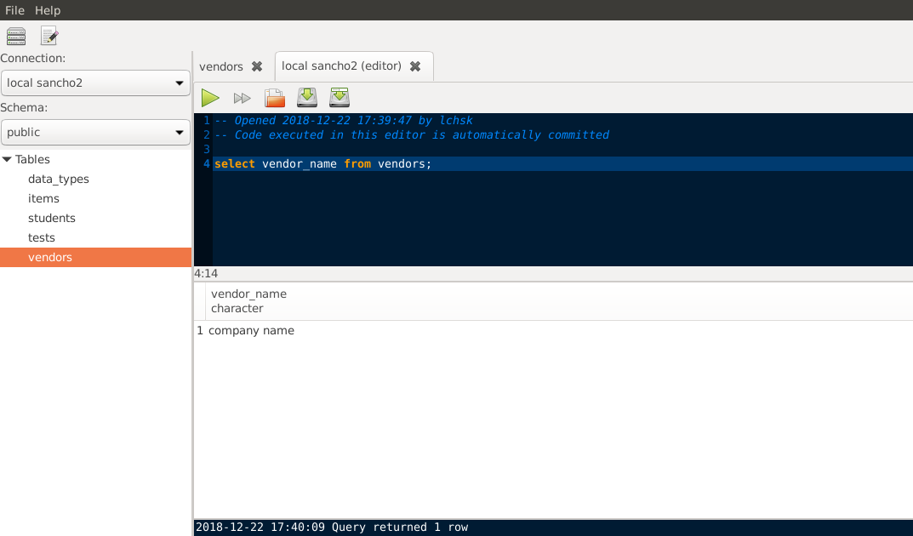
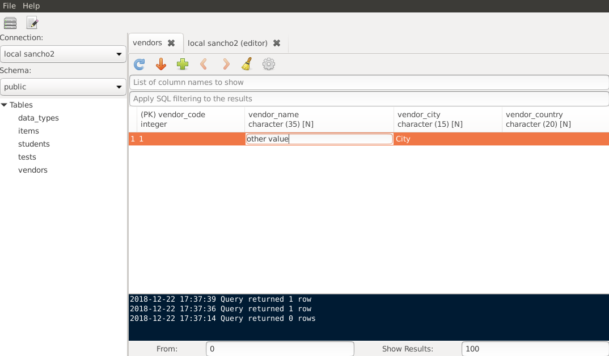
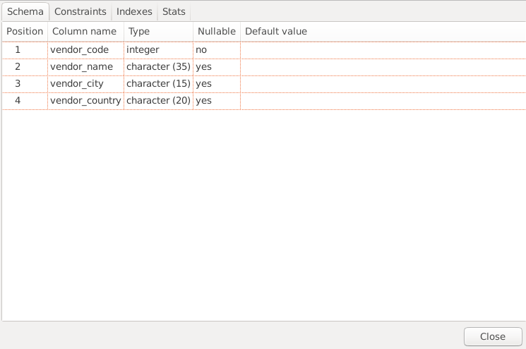

SQL editor with syntax highlighting and tab-based user interface with the ability to work with many tables and queries at the same time

You can view tables in your databases using simple UI
Update, insert and delete table rows quickly without using SQL

